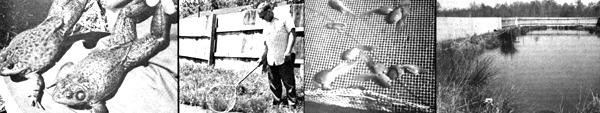

Most business-minded farmers can figure on making about $69 gross income on an acre of wheat . . . approximately $160 from the same amount of corn.. . and around $175 with an acre of soybeans. Then there's Leonard Slabaugh,a Missouri farmer with a completely different approach. For Leonard swears that his highly unusual crop-LIVE BULLFROGS-returns a full $10,000 profit . . . per acre . . . and requires only one hour of his time each day!
"Why, I can harvest 6,000 frogs a year on this two-acre farm . . . and I realize anywhere from $2.50 a pound to $25 per frog!" Leonard Slabaugh-against a background of grunts and croaks-was telling me his success story with as much enthusiasm as a gold prospector who's suddenly struck it rich. "Yep, you can make big money with these little rascals. Come on out to the breeder pond and I'll tell you all about it."
As we walked up to the mini-lake, I saw hundreds of startled giant bullfrogs jump into the water. Then, half a minute later, pairs of marble-sized eyes began peeping above the surface of the pond like submarine periscopes searching for the enemy.
True bullfrogs (Rana catesbiana)-the webfooted livestock that Slabaugh specializes in-are not difficult to identify since they're the largest frog native to the continental United States. Although their natural habitat centers around the woodland lakes and ponds of the eastern and southern U.S., these profitable amphibians have been known to thrive in cultivated waters as far west as the Pacific coast and as far north as southern Canada.
"The demand is greater than the supply . . . it always has been," Leonard Slabaugh continued. "I sell all that I can produce and still have people backed up on waiting lists: Supermarket chains and wholesale outlets buy 'em in enormous quantities. Big restaurants want 'em shipped out on ice. People come by here and pick'em up by the buckets full. High schools and colleges need bullfrogs for their biology classes, and laboratories use 'em for medical experiments. Why, the market is growing continuously all the time."
As I soon learned from Mr. Slabaugh, there are even scientists at NASA (the space agency) who want to launch some of his frogs into orbit! They'll pay him $25 each-for 30 of his best stock a month-until the contract ends in 1982. That's $750 in addition to the estimated $1,500 to $2,000 of monthly income that Leonard now makes raising his giant croakers!
If frog farming is so profitable, then, why aren't more people doing it? "This is a secretive business," Mr. Slabaugh admits. "I tried to raise frogs when I was 18 years old, but-back then-I didn't know how to keep enough of each hatch alive all the way up to salable size to make it worthwhile. Oh, I talked with other farmers all right, but they made frog breeding sound like the worst occupation in the world and wouldn't give me any help. I even looked for printed material about the subject, but there simply wasn't any available."
Why such secrecy? Leonard now believes he knows the answer. "Successful farmers just don't want to talk about the business. The fewer of us in it, the better. It's like the magician who won't explain any of his secrets. No matter how hard you try, you just can't do a magic trick unless someone else shows you how it's done. Oh, you might figure some of 'em out by yourself . . . if you spend twenty years tryin' . . . but it's not worth the trouble. Well, frog farming is the same way."
Slabaugh then went on to tell me that a female Rana catesbiana-wild or domesticated-will lay as many as 20,000 eggs along the edge of a pond. If left to shift for themselves, about 90% of those eggs will either sink to the bottom and die or will be eaten by predators before they hatch into tadpoles a few days later. And, out of the few lucky ones which make it that far, all but 6 to 10 of the vulnerable little tads will somehow fall prey to nature (and to each other, because they're cannibalistic) during the nearly two years which it takes for them to grow legs and become adult frogs. In other words, the odds against survival for the species are only a mere 20,000 to 10!
The magic secret of making Big Money in this business, then, boils down to a single golden commandment: Find some way to increase the egg-to-frog survival ratio in your ponds. Inexperienced farmers-the ones who start from scratch without consulting old hands like Leonard Slabaugh-find out, the hard way, that it can take several years to learn everything that Leonard told me in just a few hours.
Even if you have to dig out the "tricks of the trade" on your own the hard way, though, the effort can still be worth it. Because-once armed with those secret-seven a beginner can start producing 5,000 to 10,000 marketable bullfrogsfrom each pair of breeders on his or her farm during his or her first two years of efficient operation!
Now that can quickly add up to serious money, so you're quite obviously way ahead of the game if you can pick the brain of a sly ol successful frog raiser (like Leonard Slabaugh) before you plunge into the business . . . rather than after. I was lucky enough to do just that . . . and here's what I learned:
Over the years, Slabaugh has found that a five-pond breeding, hatching, and maturing system (one BREEDER, one HOLDING, and three GROWING pools) works the best for his two-acre enterprise.
The first of these bodies of water is the BREEDER POND. This permanent "home" for Leonard's mature male and female stock (which range from 4 to 25 years in age!)-is 20' X 100' X 4' deep and contains approximately 100 of the amphibians (half male, half female).
Naturally, this is Slabaugh's "key" mini-lake, and he has taken steps to protect it. Several years ago, Leonard installed a tall corrugated aluminum fence all the way around the pond to keep out dogs, cats, raccoons, and other predators. Later he added wire fencing buried about 18 inches deep to discourage burrowing animals from digging their way in. (Eventually he installed this same kind of protection around all his ponds.)
"My breeding stock is now safe and they frolic around out there all during late spring and early summer," Leonard says. "When each female lays her eggs, they look just like tiny black seeds suspended in a clear jelly. These masses of eggs are called spawn and it clings to the grass and water plants all around the pond's edge for a little while, until I can get out to collect it. And I make it my business to do that as soon as possible so all these eggs won't sink to the bottom and get away from me!
"I generally harvest a couple of buckets full of the eggs at a time. Then I take 'em over to the incubator tray." This container-a wooden frame measuring 2' X 2' X 4" deep, with plastic wire screen nailed across its bottom-protects the delicate spawn (while it's suspended in a HOLDING POND) until it can hatch.
Since large tadpoles tend to feed on smaller ones-and on frog eggs-Leonard is quick to transfer each day's wiggly hatch from the incubator tray directly into the 50' X 20' X 4' deep holding pond. By the time all the new tads are removed from the tray, they've grown to about the same size and no longer seem much interested in bothering each other.
"I get about an 85% survival rate-nearly 17,000 tadpoles from each 20,000-egg hatch-and, believe me, that's hard to beat!" This "secret" hatching technique is one of the reasons Leonard Slabaugh makes such a profit from his frog farming operation.
Slabaugh believes that another reason is his special GROWING POND design. After just 4 to 5 months in Leonard's holding pool, his tadpoles have made the metamorphic change into frogs and are ready to spend the next couple of years fattening up in his three "U"-shaped mini-lakes. The arm of each "U" is about 150' X 15' X 4' deep and-because of their unusual shape-the bodies of water have more bank area in relation to their volume than do ordinary round or oblong lakes. From a bird's-eye view, in fact, this "growing area" on the Slabaugh farm looks like a long winding canal, rather than a series of three ponds.
Although some farmers have experimented with giant plastic-lined or concrete pools, Leonard has found that earth ponds-with natural plant growth on their banks-produce greater numbers of healthier frogs. Furthermore, he has encouraged this growth by sowing a permanent "pasture mix" of wild seeds and clover around his mini-lakes. (A couple of goats on the outside of the fences keep everything nicely trimmed where passersby can see it.) A few local Missouri water plants in the pools themselves add a final touch.
(A little further south in Arkansas, frog farmer Vol Brashears keeps the banks of his vest-pocket lakes thriving with watercress, peppermint, iris, lilies, cane, and other native bog plants. Vol also believes a natural setting is better for his aquatic livestock and that it sets up an "eco-balance" that keeps frog ponds naturally clean and pure.)
As a final self-cleansing touch, Slabaugh leaves a trickle of water flowing through his ponds at all times. Wirescreen filters at each end of the chain of pools keeps out foreign matter and frogeating snakes.
The natural diet of adult bullfrogs consists mainly of live flying insects, but Leonard has a "secret" food supplement which-he swears-dramatically increases his livestock's rate of growth.
He wouldn't tell me what this supplement is . . . but I did notice thousands of tiny crawfish flipping around in Slabaugh's ponds with both his tadpoles and mature stock. Leonard didn't want to talk much about the crawfish, however, so we dropped the subject.
(In Arkansas, Vol Brashears says his frogs love crawfish and eat them almost exclusively. Vol adds a few flying insects to the amphibians' diet by hanging a series of light bulbs around the frogs' watery homes. The lights-which are left on a couple of hours each night-attract thousands of flying snacks for his ever-hungry but fat bullfrogs.)
Since tadpoles are largely vegetarian - except for all-too-frequent nibbles at their brothers and sisters-they need a lot of natural pond greenery to eat while they're growing. A healthy algae bloom can provide both phytoplankton and zooplankton for the baby amphibians . . . which also relish common "pond moss" or Spirogyra. These natural foods, obviously, should be encouraged.
Bear in mind, though, that you can get too much of a good thing . . . in this case, weed and algae growth. That is: While it's true that mature frogs breathe air, tadpoles must get their oxygen from the water in which they swim . . . and weeds and algae sometimes can draw so much oxygen from a pool of water that there's nothing left for anything else. If you ever see your tads coming up to the surface and trying to breathe (just the way fish occasionally do in a stagnant lake), skim off or otherwise cut back the plant growth in that pond . . . immediately.
Although bullfrogs seem to be fairly disease-resistant-Slabaugh has never had an epidemic in his stock-two illnesses can strike your aquatic crop if you allow your ponds to become overcrowded or dirty.
Saprolegnia is an ugly fungus that sometimes grows on a bullfrog's skin and the disease is very contagious. No cure is known and infected amphibians should be separated from their healthy brothers and sisters and destroyed as soon as possible.
Another-equally ugly-disorder is caused by bacillus hydrophillus fascus and is commonly known as "red leg". The slang name comes from the fact that the bacteria cause the blood vessels in a frog's legs to congest, swell, and turn red. This condition can be fatal . . . but it is often cured merely by keeping the infected amphibians out of water and in a cool place for several days.
As with most of the disorders which attack any livestock on a farm, the two diseases mentioned above are best "cured" by preventing them in the first place. And cleanliness is the best preventative of all. (This is the principal reason Slabaugh keeps a trickle of water circulating through his ponds . . . it has the same natural cleansing action of a slow-moving stream in nature.)
The bullfrog growing season in southern Missouri extends from early spring to late fall. As might be expected, however, the amphibians slow down considerably as cool weather approaches and eventually-when the temperature drops to about 40°F-go into hibernation. (That is: All the fat a croakers swim down to the muddy bottoms of their ponds, burrow in, and go a to sleep until the following spring.)
"Winter is the best part of the year for a me," Leonard says. "It's a vacation. All I 'have to do during the cold months is keep the bottoms of the ponds from freezing. The tops I don't care about . . . even if ice freezes down a foot or two -from the surface. That ice won't bother a my snoozing brood at all as long as they're surrounded by water and mud that's 32° or warmer."
As spring again creeps back across the land, Slabaugh's sleepy bullfrogs dig themselves out of their muddy beds, swim to the tops of their ponds, and crawl onto the. mini-lakes' grassy banks.
Although Leonard's growing ponds are usually crowded, the frogs don't mind as long as each male has a threeto-four-foot patch of shore to call his own. And that-of course-is where the disputes sometimes arise ... as a young male squabbles with an old croaker over a choice piece of territory. Because bullfrogs have no teeth or claws, however, the contenders rarely actually hurt each other . . . but the battles sometimes become quite heated nonetheless.
"Why, they wrestle just like boys," says Slabaugh. "They'll jump up on their hind flippers and grab each other 'round the chest with their front legs and throw each other to the ground with a thunk! Then after a while the loser just gives up and hops away to look for another place in the sun. And the winner! Why he takes a seat on his property, puffs up, and begins to sing an amorous frog song about what a fine fellow he is. And believe me, that soon has a bunch of females poking their heads out of the water and batting their eyes in his direction."
If you don't know better, you've probably envisioned a frog farmer's "roundup" of marketable livestock rather in terms of an old Keystone Kops movie . . . with herdsman and amphibians all running, jumping, and splashing back and forth through their man-made swamp until one side or the other finally "gives". Not at all. The operation is really much more refined than that.
As Leonard points out: "Wild frogs do spook easy, but domesticated ones-which soon become accustomed to seeing their owner puttering around every day-get to be just like pets. Mine usually jump into the water when they see me comin' . . . but pretty soon they crawl up on the shore again to find out what doin'. I have to be careful not to step on'em."
This herdsman/livestock relationship explains why Slabaugh's harvesting technique may not be exactly sporting . . . but why it surely is quick: Leonard simply walks around at night with a flashlight and plucks his amphibians off the ground with no more difficulty than a gardener collecting cucumbers. That's for the small orders. When Leonard wants to gather several hundred of the frogs at a time, he just scoops them up in a fish net.
Although some people (the inexperienced among us) tend to lump frog legs into the same category as escargot (Ugh! Snails), that comparison is really a mistake. Bullfrogs may be a little short on beauty, but they're extremely clean animals. And they're definitely not (how should I say this?) . . . slimy. . . like trout (and most other widely eaten pan fish) are when they're taken fresh from the water.
"Frogs are easier to clean than any other animal," says Leonard Slabaugh (and he ought to know, because he's cleaned a passel of 'em in his day). As a matter of fact, cleanin' a frog is a whole lot easier than cleanin' a fish: Just remove the head and the insides and then skin it. That's all. Every bit of the meat makes for good eatin' . . . even if the fancy restaurants do just serve the hind legs."
Slabaugh's marketable frogs weigh in at about a pound live . . . and a halfpound dressed. Which means-at prices currently ranging from $2.50 to $4.50 a dressed-out pound-that Leonard is realizing a minimum gross income of $1.25 to $2.25 from every frog he sells. (And he makes even more, of course, on the smaller animals purchased live at higher prices by schools, colleges, and research labs.)
At that, Slabaugh stands in awe of another grower he knows who lives near Las Vegas, Nevada. "Those restaurants out there charge $18 a plate for just two fried frog legs," Leonard says. "And that of boy is gettin' eight dollars a pound for the meat he sells. Why, he's sittin' on top of a gold mine."
And why would anybody pay $18 for two frog legs . . . or even half that much (as is more common) for three or four of the drumsticks? Because the meat is pure white and tastes very much like chicken . . . a very tender and very delicate chicken. If you've never eaten frog legs, you've missed a rare treat.
Raising bullfrogs-then-can be fun, profitable, and easy . . . if you've got a couple of acres to work with, have just a little bit of common sense, and are willing to let an "old-timer" in the business help you get off on the right foot.
"You don't need as elaborate a setup as I've got when you're just startin' out," Slabaugh advises. "Forget about breeding stock and havin' five ponds and all the other extras, at least in the beginnin'. Just buy live tads-they can be shipped cross country-and keep 'em clean and healthy in one pond. Then, as they start sproutin' legs, move 'em over to a second pool and let 'em grow. The hardest part will be waitin' two years until your first batch reaches market size but, after that, you've got it made. Then you can start plowin' money back into the operation until it's as big as you want to make it."
And if that route into the frog business doesn't appeal to you, Leonard suggests another approach: "Dabble" your way in. "Catch a coupla wild bullfrogs or buy a pair of breeders for about $30 from someone already well established in the game. Then just let nature take its course and see how well you do experimenting with your amphibians' whole life cycle on a small scale for a couple of years. After that-if you like the business-you can start building ponds and go into this thing in a big way."
And how will you know if the fellow you purchase your original breeding stock from really does sell you both a male and a female frog? Easy. Look at the eardrums (the black circles just behind the eyes on each of your critters). The male's eardrums will be larger in diameter than his eyes are (or about twice as wide as the space between his nostrils). The female's eardrum, by contrast, will be just about the same size as her eye (or slightly smaller than the space between her nostrils).
And you probably are better advised to purchase that first pair of breeders, rather than trying to catch them in the wild. Bullfrogs are classified as game animals in some sections of the country and their capture is subject to regulation. In Missouri, for example, a bill of sale from a licensed frog raiser must accompany every shipment of brood stock. In many areas, it's even illegal to transport a wild bullfrog across a state line for any purpose!
Of course, if you really want to get into the frog business right now and with the fewest missteps possible, there's always Leonard Slabaugh. After 35 years of trial and error and profitable operations, he stands as about as good an authority on the subject as anyone . . . and, as this article has already demonstrated, of Leonard truly enjoys introducing others to the many mysteries of his profession.
Of course you can't expect Slabaugh just to give away all the knowledge he's worked so hard to acquire. But the onetime fee of $1,500 which he charges for his "complete course" of bullfrog farming trade secrets seems to be reasonable enough . . . especially since it does contain all those secrets, a list of proven markets for the animals (both live and dressed out), and a followup consulting service (just in case you run into snags in your venture later on).
You can contact this "Wizard of Frog Hollow" by writing to Leonard Slabaugh, Route 3, Box 59, Poplar Bluff, Missouri 63901. Or call him by dialing (314) 785-7517. Or just drive on down to Poplar Bluff and visit the farm (parts of it are open to the public). You won't have any trouble finding the place, especially at night: It'll be the one that's filling the air with more croaks and groans than The Great Dismal Swamp.
Doesn't all that noise bother Leonard Slabaugh? Would it bother you . . . if you knew that each one of the 20,000 or so bullfrogs you own was worth up to $25 apiece?
EDITOR'S NOTE: Additional in formation about frog farming can be obtained from Vol Brashears, P .O. Box 126, Berryville, Arkansas 72616 and NU-TEX Frog Farms, P.O. Box 4029, Corpus Christi, Texas 78408. Please bear in mind, however, that the editors of this publication have not checked out either one of these sources nor have they had direct experience with Mr. Slabaugh. Exercise normal business caution when dealing with any of these frog farming operations.
|
 Older tadpoles go from incubator to holding pond... During their 4 to 5 monthsin the holding pool, the tads change to frogs. The male bullfrog (foreground) has larger eardrun ""circle"" that his mate... A fish net comes in handy for filling big orders |
|
|